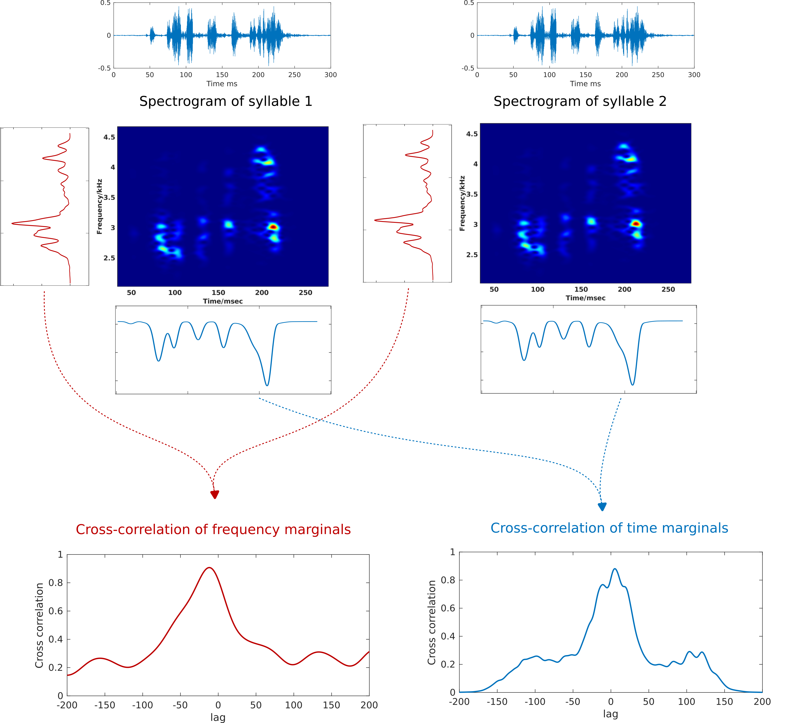
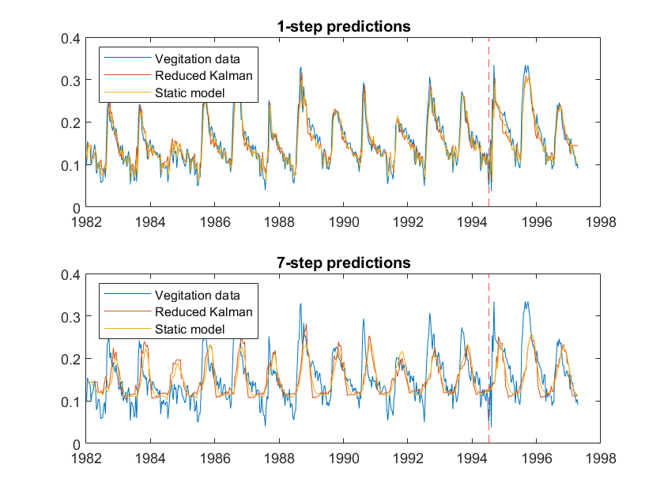
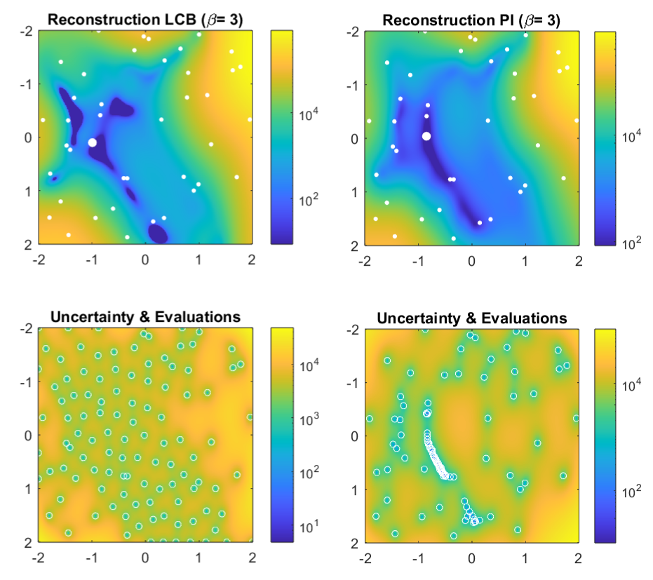
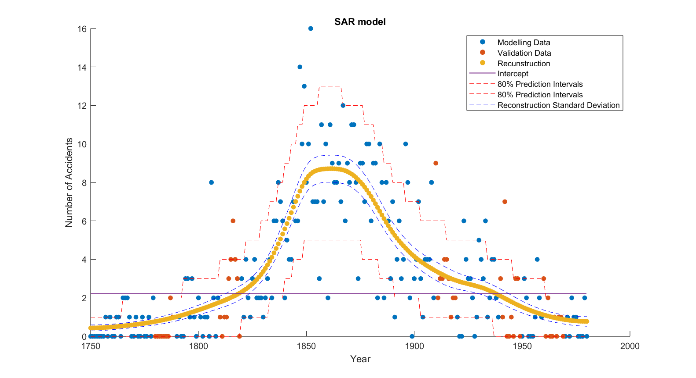

Develop an algorithm for classifying whether two bird syllables are the same by utilizing spectral analysis methods to account natural variability in voice recordings.

In this project we develop and evaluate different time series models for rain and vegetation-index data Including and ARMA process, a Box Jenkins model with the rain as an input, as well as a dynamic time varying model built with a Kalman filter.

A mini-project in SQL where I censor a text based on a list of banned swear words.

Implement a Bayesian Optimization algorithm in Matlab. Optimization is the task of finding the optimal value of a given function and is an integral part of applied mathematics and machine learning.

Modelling the number of coal mining accidents in Britain with a Gauss-Markov Random Field model.